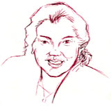

Interview with Beverly San Augustín

Beverly San Augustín has taught for more than 20 years in Guam at both middle and high schools. The Council of Chief State School Officers recently named her State Teacher of the Year in recognition of her energy, creativity, and devotion to teaching. She teaches a range of courses, including U.S. History, Guam History, and American Government.
Interview with Beverly San Augustín, Guam 1. What drew you to history teaching? History was my favorite subject, in part because I had very inspirational history teachers. They were young and local and made history come “alive” by personalizing it with their experiences or the oral history of their families. In class, they included activities such as conducting oral history interviews, rewriting history/journals, and cooperative learning. They encouraged students to evaluate history beyond the historical data provided. They allowed us to think critically, to appreciate our local history, and to learn from it to prevent our political and social leaders from repeating the mistakes of the past. They taught me to appreciate Guam’s history because it attributed to making our society and country unique. I try to share this with my students.
As I was studying the history of Guam, some teachers assigned projects that emphasized local and family history, such as creating models of local cultural arts and interviewing grandparents and parents. This was especially interesting for me because my parents came from different cultures: my mother was Chamorro (native of Guam) and my father Filipino. For one project, I was limited with knowledge and resources of what specific crafts I could create, so I sought my grandfather’s advice. He and I made slippers from the dried fibers of a coconut tree. As we were making these slippers, he shared funny stories about how he would loosen such slippers and play tricks with friends when he was young. I became much closer to my grandfather and I yearned to hear more about his past and our history—stories that were not mentioned in school. I was excited when presenting my oral history reviews in class because my stories were interesting and humorous; my classmates enjoyed them just as I enjoyed relating them. This helped me learn to appreciate my family’s role in history.
My father was another major resource, sharing with me his history, his memories of life as a youth in the Philippines. As I studied Guam history and American history in school, my grandfather and parents related their versions of historical events, such as the Great Depression and WWII, when Guam was occupied by Japan. I would go home and compare what I had learned with their memories. It was fascinating to hear the differences and effects of how history took place on the U.S. mainland versus in the Pacific Rim. I began to recognize the impact of various occupations of Guam, especially on our native population and culture.
I also became curious about why there was not much written about the roles of Chamorros in significant historical events. Most of the history was taught and written through the perspectives of non-native historians. This prompted me to ask why so much information was not recorded and actually taught in school.
Growing up, I was discouraged from learning the local language. In school, we were penalized with fines and corporal punishment for speaking the Chamorro language. We were highly criticized for having accents and not being fluent in English and were taught that those who did not speak English fluently were not intelligent and would not succeed in professional careers. I now emphasize to my students that having an accent does not reflect intelligence. I encourage them to be proud of their ethnic heritage and to learn their native language to keep their culture alive. Thirty-five years later, students are required by law to study Guam history and learn the Chamorro language.
As I teach U.S. history, I always include local perspectives and encourage students to ask their families for stories. This brings history alive for students, making them realize that there are people who experienced the history they read in books. The past also becomes more meaningful when students realize that there are many ways of interpreting history. I was taught to learn history literally, as it was written in the books. But as I grew older, I realized that there were multiple perspectives. I now teach history this way, challenging students to explore many points of view before they try to evaluate the causes and effects of historical events or predict how things might have happened differently. I encourage my students to see themselves as historians, to rewrite history based on these multiple perspectives.
I also became interested in teaching history because of my own interest in significant historical events and people. I was fascinated with the Spanish-American War, WWII, and the American colonialism of Guam—historical events that were relevant to our local history. I lived on Guam most of my life until I transferred to the University of California, Irvine to finish college. One of my history professors, Dr. George Boughton, convinced me that in order to become an effective history instructor, I needed to acquire a more diverse background of historical knowledge. The local university only had about four classes for history majors in the late 1970s. I graduated from UC Irvine in 1977.
I also hoped to become one of the first female local historians to write the history of our island. Most of Guam’s early history was written by European and Spanish historians and based on the journals of Spanish explorers and missionaries. These typically depicted local people as docile, passive, and ignorant. There are now local historians writing our history, although few are women. And U.S. history in general is now taught with greater attention to cultural sensitivity and with an abundance of resources that provide students the opportunity to gain a better understanding of history.
2. When did you start teaching? Which courses have you taught? I started teaching American Civics, Guam History, and American History in 1979. Through my 23 years of teaching, I have taught English, U.S. History, American Civics, Guam History, Journalism, Geography, Psychology/Sociology, Student Government, American Government, and Advanced Placement American Government. I have taught the U.S. Survey course in high school for almost ten years.
History teaching has improved tremendously. The lecture method has been replaced by more interesting and innovative teaching strategies. Even the textbooks have improved—they are no longer cut and dry. Students now appreciate Social Studies classes more than other disciplines. This is a big change from the years when students dreaded taking such classes.
3. What are the biggest themes that you try to convey in the U.S. Survey Course? When teaching the U.S. History survey, I emphasize skills that are necessary to be active, participating citizens, such as critical thinking, cooperative learning, research, and conflict resolution. I focus on the historical structure and functions of the U.S. government, the principles and beliefs of the constitution, and democratic ideals.
I also emphasize several major themes. The first is the “American Dream.” We investigate this notion and study different perspectives on how U.S. citizens define the “American Dream” and attain their goals. We compare Americans in the twenty-first century with those in the nineteenth and twentieth centuries, and look at how different minority groups, such as American Indians, African-Americans, Hispanics, Asians, and Pacific Islanders, have engaged with the “American Dream.” Another major theme is science and technology. We study the social and economic effects of technology, assessing both advantages and disadvantages. We compare the influence of science and technology today to earlier centuries, looking, for example, at the Industrial Revolution, the Gilded Age, the Roaring Twenties, and the daily usage of computer technology today. I ask students to predict how changes in science and technology will affect the future.
Throughout the survey, we study cultural diversity, looking at the effects (positive and negative) of diversification on America. I ask how we should define the term “American” and how we weigh the conflicts and achievements of the various ethnic groups who contributed to the rich and unique heritage of our country. For example, we investigate the experiences of American minorities and the question of civil rights. I challenge students to analyze civil rights, to evaluate which are most critical and why. How do Americans preserve their basic rights and liberties in an ever-changing and increasingly technological world? We study economic discrimination historically and look at the legislative and social process of attaining equality and political rights, for example for women and gays and lesbians.
4. What materials do you incorporate into the survey? What do you want students to learn? When I teach the U.S. History survey course, I emphasize citizenship skills related to the struggles of various minority groups for civil rights in the U.S. By using primary and secondary documents, I emphasize historical figures such as Harriet Tubman, Susan B. Anthony, Rosa Parks, and Martin Luther King, Jr. I want students to understand their efforts and achievements in order to be inquisitive, active citizens in America. I am hoping students will emulate such figures in order to fight injustices in our society today. I also emphasize the need to understand the plight of American Indians, African-Americans, Jews, and other minorities and to reduce racism and inequality in our society. I encourage my students to utilize the knowledge and the accessibility of various resources available today to want to make a difference, especially when compared to the obstacles faced by these historical figures. I have students analyze various types of propaganda and assess the validity of its uses politically, socially, and economically. By informing students of various ways to make a difference, I am hopeful that students will become active directly and indirectly by ensuring the accountability of our political leaders, becoming involved with interest groups, and being informed by the time they can exercise their right to vote.
I usually try to work collaboratively with the Language Arts Department, aligning my assignments with the literature they are using. But due to drastic changes of instructors, this can be challenging. Some of the primary documents I used are the U.S. Constitution, the Emancipation Proclamation, and the Gettysburg Address. I also use
Time Life, “Voices of the Civil War” and excerpts from speeches such as Abraham Lincoln (1858) and Barbara Jordan. Some novels I encourage students to read or use for reference are
Autobiography of Miss Jane Pittman,
Red Badge of Courage,
The Underground Railroad, and
Battle Cry of Freedom. I also use significant Supreme Court cases such as Dred Scott,
Brown v. Board of Education, and
Plessy v. Ferguson. I incorporate several books on Guam into the survey, including
A Complete History of Guam by Paul Carano and Pedro G. Sanchez,
The Organic Act of Guam in 1950, and
Bisita Guam: A Special Place in the Sun by Ben Blaz.
I don’t think I teach history in a dramatically different way from the textbooks. What I do is provide supplemental readings to provide a broader representation of historical events, especially now that teachers are encouraged to be culturally sensitive to the diverse student population. I have seen positive changes in textbooks that now provide multiple perspectives of history. I utilize what is credible on the Internet such as the
Time Life Books and
Exploring Amistad: Race and the Boundaries of Slavery in Antebellum Maritime America.
5. How do you balance teaching the U.S. History survey with the unique local history of Guam? First, I relate the historical background of U.S. history and the reasons for expansion beyond the mainland. Then I relate Guam’s significant role as a territory/possession in U.S. history, from the Spanish-American War in 1898 through occupation by Japan during World War II to its current political state. In the U.S. survey course textbook, there is very little mention of Guam other than its status as a U.S. territory. The book often does not even specify that Guam is an “unincorporated” territory under the jurisdiction of the Department of Interior, although it usually mentions its acquisition during the Spanish-American War and its role in WWII.
Aside from the history books, students learn personal insights from their relatives who survived WWII. Guam residents have a profound sense of patriotism, especially during one the celebration of Liberation Day on July 21, of the most significant holidays on the island. Each year, Guam invites the local military veterans of WWII to serve as parade marshals and special guests.
6. How do your students study the relationship between Guam and the United States? By first understanding U.S. history, students in Guam have a better foundation for understanding the cause and effects of events impacting their island. Since the island is still developing rapidly, students can relate to U.S. historical events by pursuing the interests of conservation of natural resources, reducing the various types of pollutants in the environment, and preserving their language and culture. Sometimes there is conflict. For example, my students do not quite comprehend their roles as U.S. citizens because they cannot vote for their President nor can their congressional representative vote in Congress. They do not fully comprehend the political status of the island in relation to the federal government or their citizen’s rights compared to their counterparts in the U.S. mainland. They begin to ask if they are only half-U.S. citizens.
It is no wonder that stateside Americans do not associate to the “other” fellow American citizens in the U.S. territories. Americans feel that we are not American citizens but “foreigners,” which attributes to the prejudice, racism, and misconceptions of political, economic, and social equalities when territorial U.S. citizens migrate and reside in the U.S. mainland.
It is challenging to teach our students that they are a part of this rich democratic heritage when they read textbooks and resources that reflect otherwise. They leave the survey course with questions about their true role and responsibilities as American citizens. Our textbook on the history of Guam supplements this with historical data on the plight of Chamorros politically, socially, and economically. I use a variety of resources, such as primary resources and novels, to supplement my teaching of U.S. history because of the cultural sensitivity of diverse learners. For example, the textbook
Americans by McDougal Littel (Houghton Mifflin) adheres to such needs. It includes special features such as personal stories or journals of daily life which increase students' interest in history.
Students in Guam tend to feel overwhelmed by American popular culture. They demonstrate much pride, but they are often confused because they feel that life used to be simpler. They feel that there are advantages and disadvantages to technology and that so much diversity can create confusion and greed that affects them and their families. They feel that Americans have become so competitive and materialistic that they need to adhere to the basics such as conservation, preservation of the environment, and social values.
The military population has not changed the relationship with the U.S. The military base closures and reductions have affected the island economically more than politically. There are Department of Defense schools for each level (elementary, middle and high school) so the children of military personnel attend their own schools.
7. What are your most important goals in teaching the survey course? What do you most want students to take away from your U.S. survey course? I feel the most important goals are the following: to provide historical knowledge and foundation; to give the opportunity for students to synthesize and analyze the causes and effects of historical events necessary for understanding current political, economic, and social issues; and to emphasize the responsibilities of citizenship. I want students to be able to appreciate the history of Guam and to be able to probe, analyze, and evaluate contemporary issues. I want them to become actively involved in the political and social life of Guam, to make a difference for our country.
I feel I am most effective in meeting the goals of the U.S. survey course by providing students opportunities to conduct research, engage in debates and role-playing, and participate in cooperative activities. For example, when I cover the U.S. Constitution, I have students work in cooperative groups. I divide the Constitution into sections and each group is responsible for understanding and explaining their piece. I provide some questions, but encourage them to pose questions on their own. For example, in reference to Article 4, I ask students if they think it is fair that a nonresident must pay a higher tuition at a state college than a resident of the state. In addition, students choose controversial issues that are relevant to specific constitutional amendments, such as gun control, school prayer, or the death penalty. Students have the option to support, eliminate, or change an amendment by researching and debating the issues.
I teach the Constitution for two to three weeks. First, I relate the historical background of the conflicts and compromises related to the development of the Constitution. Based on this information and their readings, I ask students to imagine or reflect on the unique personalities of the framers of the Constitution or to describe the Constitutional Convention. As I focus on the Preamble, students work in groups and prepare short dramatic or comical skits relating their understanding of the goals in the Preamble. Then we discuss the goals, purposes, and principles of the Preamble and the U.S Constitution. Students work in groups to identify sections of the Constitution that support each principle or goal and share their findings with the class. We also address significant Supreme Court cases and why there are so many cases questioning the constitutionality of various laws. Students then research and debate constitutional amendments before the class.
Finally, students develop their own constitution as a group defining their beliefs, values, and rights as students. Or students may analyze and evaluate the constitution of a school organization. Students present these to the class and post them for all to read. Overall, students enjoy the activities and gain meaningful understanding of the U.S. Constitution.
With these activities, students are stimulated and eager to discuss the issues of the Constitution. They come to class motivated and bring many questions as they prepare for their debates. They understand the complicated nature of these issues, especially with our complex and ever changing technology and society. They are amazed that such a historic and “living” document is flexible enough to adjust to the needs of our government and country, despite the drastic changes over the last two hundred years. Guam is currently debating our political status and developing a constitution for the island. So the students are curious, concerned, and more involved in the process because it relates to their current lives and the political status of the island. Yet the process also makes students more unsure of their role as U.S. citizens under the “unincorporated U.S. territory” status and their civil rights as residents of the island.
8. How does the Internet impact your classroom and your teaching of the U.S. History survey? The Internet has positively impacted learning and instruction in my class. I find so many resources and activities that enhance the learning process of students and provide innovative teaching strategies. The Internet does have limitations, though, and teachers should think about the appropriateness of sites for relating history. I feel that instructors must be able to maintain a balance between using the Internet for activities and research and encouraging reading and traditional sources.
Guam does feel much closer to the U.S. because of the Internet. Our improved telecommunications system has made everything available “at our fingertips.” It also provides opportunities to cultivate our local history and language because residents on the mainland can stay in touch and learn what is occurring on the island.
9. What tips would you give to a new history teacher—particularly someone approaching the survey course? I would suggest to new history teachers that they establish a teaching philosophy about how to best provide a broad based knowledge of history and best help students understand and appreciate history. Second, I would recommend that new teachers review the textbooks and identify additional resources to supplement. I would advise teaching the survey course thematically, identifying significant historic events. Finally, to try to make history “alive,” to share with students that studying history can be interesting, challenging, and most importantly “fun.”
Interview conducted by Kelly Schrum; completed in June 2001.